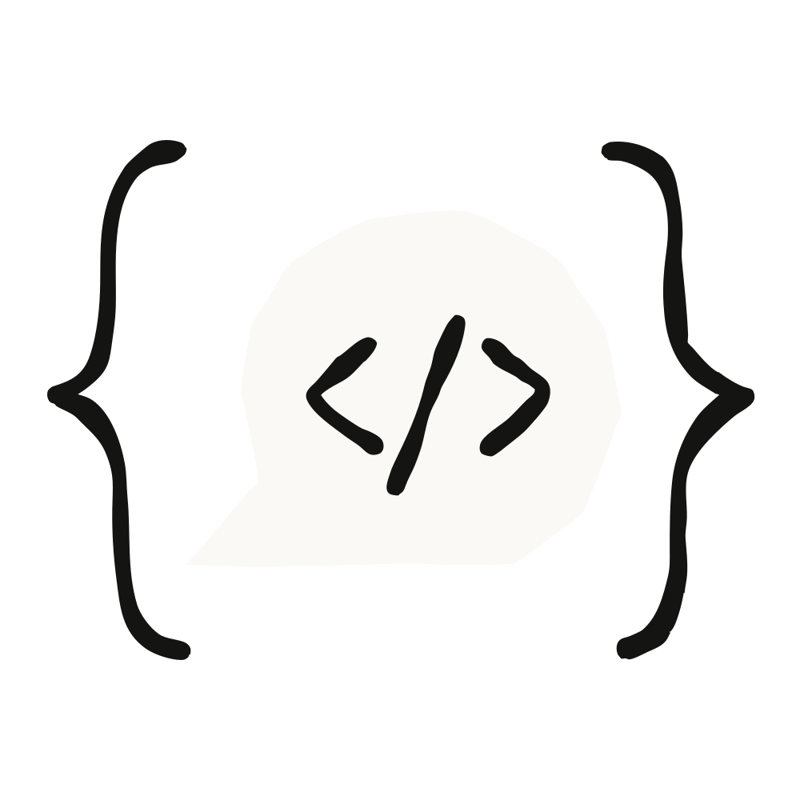

라쿠텐(Rakuten)의 AI for Business 총괄인 카지 유스케(Yusuke Kaji)는 2024년 9월부터 Claude 모델을 시험해 왔다. 그가 Claude Fable 5를 오래 돌아가는 기업용 에이전트의 단계적 도약이라고 보는 이유를 들어본다.
라쿠텐 AI for Business 총괄로서 카지 유스케가 맡은 일은 "변혁적 혁신의 씨앗을 찾아내 회사 전체로 확산시키는 것"이다.
그 씨앗 중 하나가 Claude였다.
2025년 3월부터 라쿠텐은 Claude Code로 소프트웨어 개발 속도를 끌어올리고, 여러 사업 기능에 에이전트를 세우고, 수백만 고객을 위한 AI 기능에 Claude를 써 왔다. 카지에 따르면 라쿠텐이 Anthropic과 손잡기로 한 이유는 기업 고객에 대한 집중, 리더십, 그리고 제품 감각이었다.
거의 열두 번에 이르는 모델 출시를 겪는 동안, 그는 에이전트에게 넘길 수 있는 일이 계속 늘어나는 것을 지켜봤다. 처음에는 Claude Code로 프로덕션 소프트웨어를 출시했고, 이어서 사내 여러 팀을 위한 맞춤형 Claude Managed Agents를 만들었다. 그는 새 모델을 시험해 보는 일을 "새로운 퀘스트"에 나서는 것에 비유한다.
"좋은 리더가 구성원에게 도전적인 목표를 준비해 주듯, 우리도 새로운 Claude를 위해 도전적인 과제를 준비합니다." 그는 덧붙인다. "어쩌면 Claude도 우리에게 더 뻗어보라고 밀어주고 있는지도 모르죠."
Claude Fable 5를 시험했을 때, 그는 무언가 다르다는 것을 알아차렸다. 이 모델은 이전 모델들보다 훨씬 오래 스스로 돌아갈 수 있었고, 처음으로 자기 작업을 스스로 점검하면서 카지가 자는 동안 밤새 미묘한 과제들을 끝내 놓았다.
그 여분의 자율성 덕분에 라쿠텐은 에이전트에게 더 크고 더 오래 걸리는 일을 맡기고, 일하는 방식 자체를 바꿀 수 있게 됐다.
라쿠텐은 스스로를 AI 중심으로 다시 만들고 있다. 이 프로젝트를 회사는 AI-nization이라 부른다. 고객·사업 파트너·임직원을 위해 하는 모든 일에 AI를 스며들게 하려는 전사 차원의 노력이다. Claude Managed Agents가 나오자 라쿠텐은 일주일 만에 제품·영업·마케팅·재무 전반에 에이전트를 배포했고, Slack과 Microsoft Teams, 그리고 회사 자체 업무 시스템에 연결했다.
카지와 그의 팀에게 에이전트를 만드는 데 걸림돌이 되던 것은 예전엔 누가 코드를 쓸 수 있느냐였다. 이제는 누가 그 비즈니스 문제를 이해하고 있느냐다.
"현대 기업은 커뮤니케이션 비용을 최소화하도록 설계돼 있습니다." 그는 말한다. "저는 Claude Code 같은 에이전트와 함께 일하면서 새로운 혁신의 비용까지 최소화할 때, 이를테면 아이디어에서 프로덕션까지 빠르게 넘어갈 때 에이전트가 빛을 발한다고 봅니다." 유능한 사람에게 맥락과 감각을 갖춘 에이전트를 쥐여주면, "숨어 있던 재능이 잠재력을 풀어내고 그 잠재력을 100배로 키울 수 있게 된다"는 것이다.
하지만 모든 기능 조직에서 하루 종일 에이전트를 돌리자 새로운 제약이 드러났다. 사람의 판단이다. 라쿠텐의 에이전트들은 모든 영역에서 대략 10배 빠르게 이슈를 닫아내지만, 조직이 떠안는 과제의 수도 계속 늘어난다. 에이전트를 더 붙인다고 판단이 더 생기지는 않는다. 그래서 에이전트가 빠르게 달릴수록, 조직의 진척은 고리를 닫아주는 사람에게 더 크게 의존하게 된다.
대부분의 개발자에게 오래 돌아가는 에이전트를 만들 때 가장 어려운 부분은, 최소한의 감독만으로도 성공하도록 판을 깔아주는 일이다. 알맞은 도구와 맥락에 연결해 주는 것은 그것대로 일이지만, 카지의 경험상 에이전트가 사람의 검증 없이 얼마나 오래 갈 수 있느냐에는 늘 한계가 있었다.
Claude Fable 5 이전에는, 여러 시간짜리 과제에 사람 감독 없이 에이전트를 풀어놓는 것은 언제나 도박이었다. "첫 단계에서 올바른 길을 고르면 모든 게 잘 굴러갑니다." 카지는 말한다. "하지만 첫 시도에서 방향을 잘못 잡으면, 에이전트는 그 경로를 고치는 데 상당한 시간을 쓰거나, 아예 목적지에 도달하지 못합니다." 다섯 시간, 혹은 하루 종일 돌리려던 작업에서 초반의 잘못된 가정 하나가 실행 전체를 태워버릴 수 있었고, 그걸 잡아낼 방법은 사람이 중간에 들여다보는 것뿐이었다.
실패의 원인은 자기 검증의 부재였다. 어떤 모델이든 첫걸음을 잘못 뗄 수 있다. 이전 모델들의 문제는 진행하면서 자기 작업을 점검하지 않는다는 데 있었다. 그래서 초반의 잘못된 방향 전환이 눈에 띄지 않은 채 실행 내내 누적되고, 몇 시간 뒤에 어설픈 결과물로 돌아왔다.
카지에 따르면 Claude Fable 5는 며칠에 걸친 에이전트 실행의 셈법을 바꿔놓는다. 진행하면서 자기 작업을 점검하는데, 그 빈도가 이전 어떤 모델보다도 훨씬 높기 때문이다.
"Fable을 시험해 봤는데, 자기 성찰과 자기 검증 능력이 정말 마음에 듭니다." 카지는 말한다. "이전 모델들과 비교하면, 제가 새벽 2시나 3시에 지적하기 전에 스스로 실수를 알아차립니다. 덕분에 저는 잘 수 있고요."
카지의 팀은 Claude Fable 5를 이전 모델들과 구분 짓고 프런티어 지능의 단계적 도약을 알리는 세 가지 행동을 꼽는다.
무엇보다 중요한 것은, 자율성이 길어지면서 카지가 위임할 수 있는 일의 단위 자체가 달라졌다는 점이다.
"Fable 이전에는 에이전트가 실행할 수 있도록 일을 잘 정의된 덩어리로 쪼개야 했습니다." 그는 말한다. 이제는 과제 하나를 통째로 넘기고, 여러 개를 동시에 돌릴 수 있다.
Claude Fable 5는 그 사이에 벌어지는 일을 바꾼다. 매 단계에서 되돌아보고, 초반의 잘못된 가정을 잡아내고, 스스로 제1원칙으로 돌아가는 길을 찾는다. 아무도 방향을 잡아주지 않아도 올바른 결과를 향해 다시 항로를 잡는 것이다. 모델이 실행 도중에 스스로를 교정하기 때문에 사후 승인만으로 일을 맡기는 것이 처음으로 현실적인 선택이 됐고, 카지가 위임하는 일의 단위는 과제에서 결정으로 옮겨간다. 에이전트들은 실행과 실행 사이에 기억도 이어간다. "기억을 가진 우리 에이전트들은 지난 세션에서 무엇이 잘못됐는지를 기억하고, 같은 실수를 반복하지 않습니다."
그 결과 절대적인 과제 수는 계속 늘어나지만, 정말로 사람이 필요한 일은 집중해서 다룰 수 있는 수준에 머문다. 실행 도중에 뛰어들어 방향을 잡아주지 않아도 된다는 것이, 그가 말하기를, 무엇보다 큰 생산성 향상이다. 팀은 사람만이 내려야 할 결정에 시간을 쓸 수 있고, AI 네이티브 조직은 사람의 경로 수정에 발이 묶이는 대신 계속 가속할 수 있다.
프런티어급 역량에는 프런티어급 가격이 따라붙고, 카지는 비용이 배포 범위를 결정한다고 솔직하게 말한다.
"대기업으로서 우리는 지능과 비용의 균형을 잡고 싶습니다." 그는 말한다. 그의 팀은 과제 완수율과 과제당 비용을 나란히 측정한 다음, 추가 역량이 결과를 바꿔놓는 일에만 Fable 5를 보내고 나머지는 더 작은 모델에 맡긴다.
카지가 보기에 셈법을 Fable 5 쪽으로 기울게 하는 요인은 둘이다. 더 적은 토큰과 더 적은 헛걸음으로 더 많은 일을 해낸다는 것, 그리고 손이 덜 간다는 것이다.
카지가 지금 시험하고 있는 프런티어는 개인의 속도가 아니다. 에이전트가 사람들을 조율하게 만드는 일이다. Claude Code는 그 자신과 동료들의 작업 속도를 끌어올렸지만, 어느 조직에서든 어려운 부분은 사람과 사람 사이의 정렬, 즉 한 사람의 맥락과 감각을 다른 사람의 것에 맞추는 일이다. 그는 "관리자에 더 가깝게, 조율하고 조직하는" 에이전트, 보통 팀원들 사이에서 유실되곤 하는 뉘앙스를 붙들고 있는 에이전트를 탐색하고 있다.
"우리는 AI 에이전트를 미래의 동료나 경쟁자로 보지 않습니다. 그들은 우리 주위를 둘러싼 시스템입니다." 그리고 그는 Anthropic이 스스로 내놓은 조언, 즉 눈앞의 모델이 아니라 3개월이나 6개월 뒤에 올 모델을 겨냥해 만들라는 조언을 Anthropic에도 그대로 요구한다.
"저는 우리 사회가 아직 Claude Fable 5에 맞는 모델–과제 적합성(model–task fit)을 찾지 못했다고 생각합니다." 그는 말한다. "그런데도 이미 선을 넘어 우리 세계로 건너온 모델로 두드러집니다."
Claude Fable 5로 시작해 보세요.